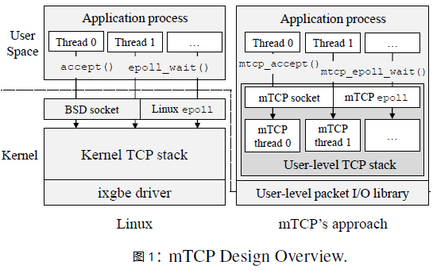
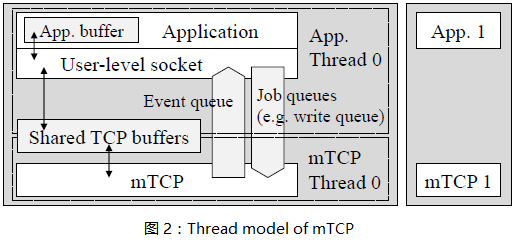
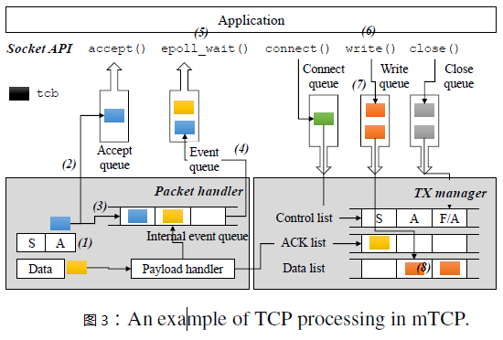

mtcp特点：
（1）将多个昂贵的系统调用转换成一个单共享内存引用;
（2）允许高效的流级事件聚合;
（3）执行批处理数据包I/O以提高I/O效率。
现象和问题？
TCP短连接变得越来越普遍，90%以上的TCP流都是小于32KB的，50%的小于4KB。高速处理TCP短连接对于面向用户的在线服务和后台系统都是一项重要的需求，但是Linux TCP的处理速度峰值是30万/s（在mtcp这篇文章提出来的时候是这个数据），而packet I/O可以扩展到千万/s，所以当前的Linux TCP架构的处理速度是跟不上实际需求的。
内核TCP协议栈的低效率的原因
lack of connection locally
多个多线程应用共享一个监听套接字（这个监听套接字在一个众所周知的端口接收到来的连接），结果多个线程为了访问套接字的接受队列竞争同一个锁，造成性能损失，简单的说就是竞争锁会造成多线程应用程序性能瓶颈。这种缺乏局部性连接带来的另一个问题是导致了额外的开销，因为增加了CPU cache misses和cache-line sharing。
Shared file descriptor space
在POSIX兼容操作系统中，文件描述符空间在一个进程中是被共享的，当Linux想要分配一个新套接字时，它会搜索最小可用的文件描述符号。但在一个要处理大量并发连接的服务器中，由于多个线程竞争锁问题，共享文件描述符空间必然带来明显的开销。MegaPipe的方法是将文件描述符空间分区进行管理。
Inefficient per-packet processing
每收到一个包都需要内存访问和DMA开销，多次这种无意识的内存访问和重数据结构（e.g.,sk_buff）在处理小包时是主要性能瓶颈。解决这种问题的一个方法就是批量的处理多个数据包。
System call overhead
大量并发短连接会造成频繁的用户态和内核态之间的切换，带来性能损失。mtcp的做法是将数据直接通过网卡递送到用户层消除这种频繁的模式切换，避免性能损失。
什么是mtcp？
mtcp是一个用于多核系统满足高性能需求的用户态协议栈。
mtcp的设计目标
mTCP的目标是在多核系统上实现高可扩展性，同时保持与现有多线程事件驱动应用程序的向后兼容性。

图1给出了mtcp的设计概述，mtcp的设计主要分为两个模块：User-level TCP stack和User-level packet I/O library。
User-level packet I/O library
mtcp没有采用之前一些系统的做法，之前的做法使用polling（轮询）来处理数据包，polling会消耗大量的CPU，这是mtcp不愿看到的。mtcp扩展了PacketShader I/O engine(PSIO)，使用了新的事件驱动接口ps_select()，类似于select()，简单来说就是I/O复用，但是不同于select()的是，ps_select()只操作指定感兴趣的NIC上的TX/RX队列。
User-level TCP stack
将Linux TCP作为一个库实现放到用户层的好处是消除了系统调用，将系统调用转换成了用户层的函数调用。

如图2所示，application使用mtcp库函数通过共享缓存与mtcp线程通信。共享缓存的唯一访问入口就是库函数，这样可以保证内部TCP数据的共享安全性。当库函数需要修改共享数据时，只需要简单的将请求放到job queue。来自于不同流的多个请求在一个循环内被堆积在jobqueue中，当mtcp获得CPU后，便对这些请求进行批处理。来自于mtcp线程的flow events会被放入event queue，处理方式同job queue。
数据包处理过程
mTCP线程从NIC的RX队列中读取一批数据包，并将它们传递给遵循标准TCP规范的TCP包处理逻辑。对于每一个数据包，mtcp首先会在流哈希表搜索相应流的tcp控制块(tcb)。如图3所示，在服务端收到一个SYN/ACK数据包的ACK后，新连接的tcb将会被放到accept queue（2），并为监听套接字生成一个read event（3）。如果有新数据包到达，mtcp会copy数据包的负载到套接字的read buffer并生成一个read event放到internal event queue。同时mtcp会生成一个ACK数据包放到TX manager的ACK列表中。

当批处理完收到的数据包后，mtcp会将queued中的event刷新到应用层的event queue（4）中，并通过信号唤醒应用层。当应用层被唤醒后，使用epoll批处理多个事件（5），并写入来自多个流的响应而没有上下文切换。每个套接字的write()调用写数据到send buffer（6），并将tcb放到write queue（7）。后面，mtcp会收集需要发送数据的tcb，并放到send list（8）。最后通过packet I/O系统调用将list中的数据包发送出去，并将它们传输到NIC的TX queue。
mtcp的原理是什么？
mtcp为每个应用线程建一个tcp线程，并将这个线程绑定到一个物理cpu核上。
将系统调用转换为内部进程间通信来消除高昂的系统调用开销
参考文献
mTCP: a Highly Scalable User-level TCP Stack
for Multicore Systems